Mode opératoire
Accueil
Mode opératoire
Accueil
@BilledJobs, geste par geste
Les écrans montrés sont ceux d'un exemple : noms et chiffres inventés. Pour un aperçu en quelques images : le diaporama.
@BilledJobs suit votre activité : les séances prévues et faites, ce qu'il reste à facturer, les paiements, les dépenses et vos chiffres. Il n'émet pas de factures : vous les faites dans votre logiciel de facturation, puis vous les notez dans @BilledJobs.
1. Ouvrir @BilledJobs
- Ouvrez la page d'accueil :
https://billedjobs.github.io/jon/, ou touchez l'icône si vous l'avez installée (chapitre 12). - Touchez Ouvrir @BilledJobs.
- Sous le numéro de version, l'application affiche votre compte Google : vérifiez que c'est le bon.
La première fois, Google vous demande de vous connecter, et l'application vous demande la langue : choisissez Français.
2. Les écrans
En bas de l'écran, quatre boutons :
| Écran | À quoi il sert |
|---|---|
| À faire | L'accueil : ce qui attend un geste de votre part (séances à confirmer, à facturer, paiements en retard, autres alertes). Boutons + Séance, + Dépense, + Client. |
| Planning | Vos séances par semaine, par 4 semaines, ou par session. |
| À facturer | Ce qu'il reste à facturer, les factures en attente de paiement, les factures payées. |
| Chiffres | Vos chiffres : l'essentiel, l'argent, les clients, les heures. |
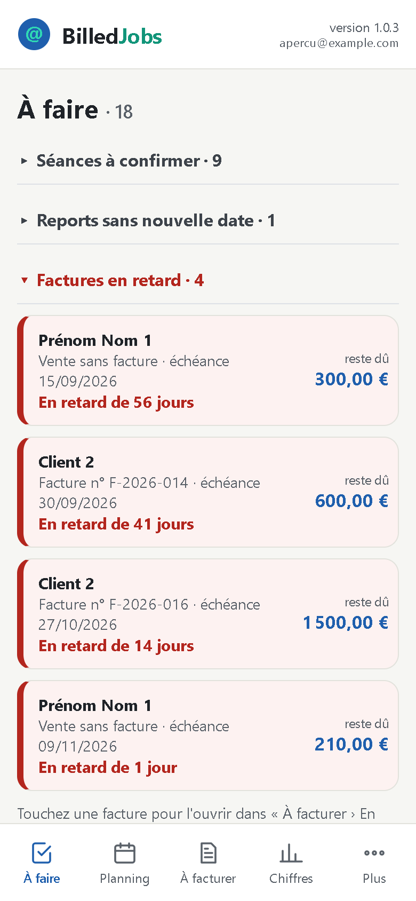
Le bouton Plus donne les autres écrans : Clients, Dépenses, Journal (qui a fait quoi, et quand), Paramétrages (votre entreprise, vos listes, vos prestations, les alertes).
Partout : l'application propose des valeurs, vous choisissez plutôt que de taper. Une erreur bloque l'enregistrement et met le champ en rouge ; un avertissement vous laisse choisir entre « Corriger » et « Enregistrer quand même ».
3. Une séance, du début à la fin
Prévoir une séance
- + Séance (dans À faire ou dans Planning).
- Choisissez la date, puis le client. Les créneaux déjà pris ce jour-là s'affichent sous la date : deux séances ne peuvent pas se chevaucher.
- La prestation est proposée pour vous : celle que vous avez utilisée la dernière fois pour ce client ; sinon, si son activité habituelle n'a qu'une prestation, celle-là. Dans la liste, les prestations de son activité viennent en premier, puis un trait, puis les autres. Rien n'est imposé : changez-la si besoin.
- Complétez l'heure, la durée, le type (formation, préparation…, qui dit si la séance est facturable), la modalité (chez le client, distanciel…) et, au besoin, le prix horaire et les notes.
- Enregistrer. Si l'agenda est activé, la séance arrive aussi dans votre agenda Google « BilledJobs » (chapitre 8).
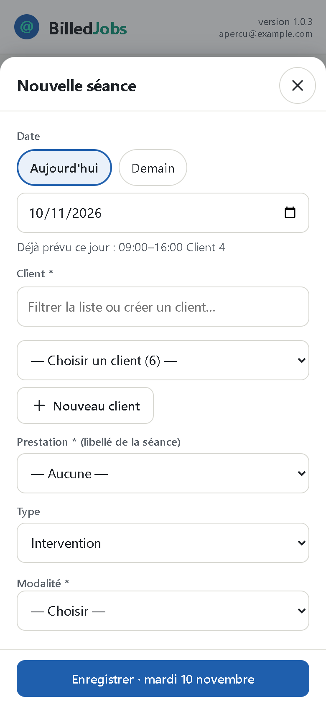
Pour une formation sur plusieurs semaines, créez une session : les jours de la semaine choisis entre deux dates, ou des dates libres. Les séances de la session se décalent, changent d'horaire ou s'annulent ensemble.
Après la séance : dire ce qui s'est passé
Une séance passée encore « prévue » apparaît dans À faire, sous « Séances à confirmer ». Touchez :
- Faite : elle passe dans À facturer (si elle est facturable) ;
- Absence : le client n'est pas venu ; cochez « facturer quand même » si vous la facturez ;
- Reporter : la séance n'a pas lieu ; l'application propose une nouvelle séance, le même jour de la semaine suivante.

En touchant une séance dans Planning, vous pouvez aussi la modifier, l'annuler (avec confirmation) ou la dupliquer. Rien n'est jamais effacé : une séance annulée reste visible, grisée.
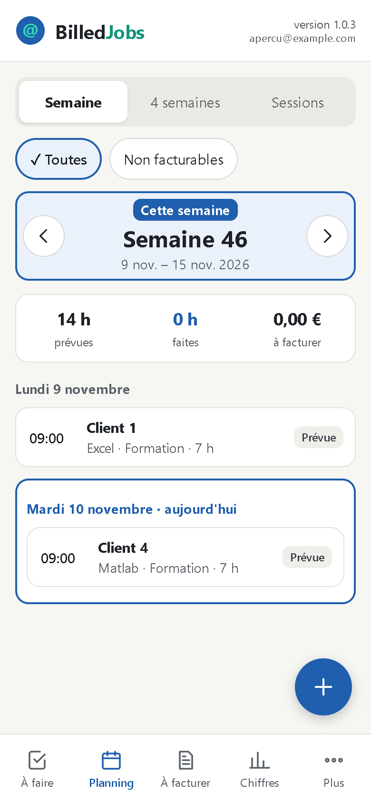
4. Facturer
L'écran À facturer prépare votre facture, client par client : identité du client, puis une ligne par session ou par prestation (période, nombre de séances, heures, prix horaire HT, montant HT), et le total HT.
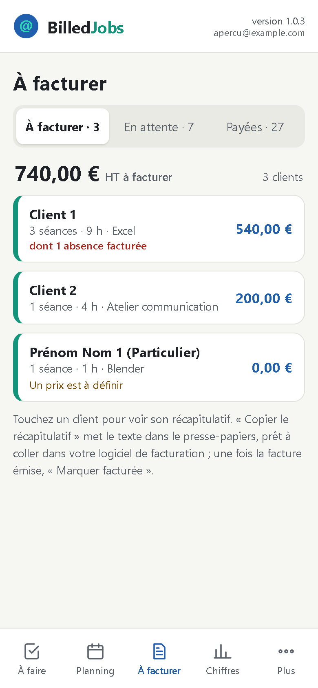
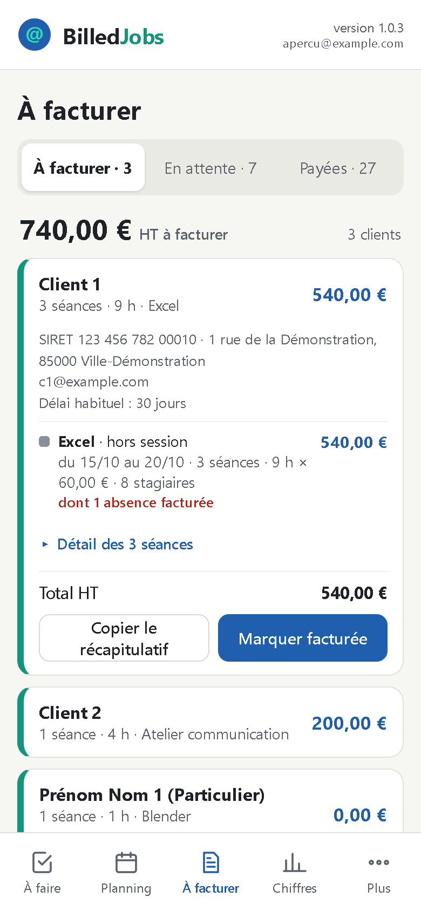
- Copier le récapitulatif : le texte est prêt à coller dans votre logiciel de facturation.
- Faites la facture dans votre logiciel de facturation.
- Revenez dans @BilledJobs : Marquer facturée. Les séances sont toutes cochées ; décochez celles que la facture ne contient pas. Saisissez :
- le numéro de la facture émise (obligatoire). S'il ne suit pas votre format habituel (réglé dans Paramétrages), l'application vous prévient ; gardez-le s'il est bien celui de la facture ;
- sa date ;
- le taux de TVA : seuls les taux que vous facturez sont proposés (voir l'encadré du chapitre 6) ;
- le délai de paiement : l'échéance est calculée.
- Valider : la facture passe dans « En attente ».
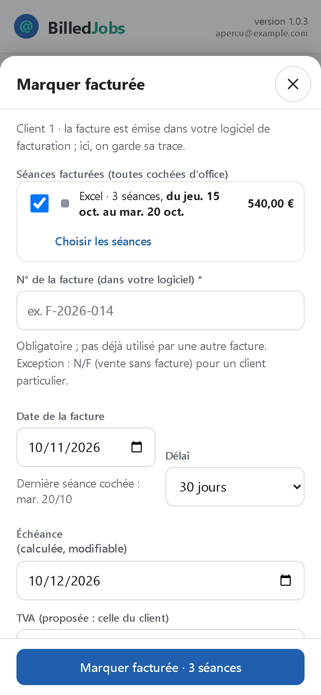
Une erreur ? Annuler le marquage, tant qu'aucun paiement n'est enregistré : les séances redeviennent à facturer.
5. Suivre les paiements
Dans À facturer › En attente, chaque facture affiche son échéance et ce qu'il reste dû. Une facture en retard (échéance passée, pas payée) est en rouge et figure aussi dans À faire.
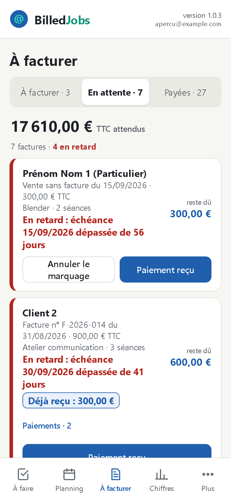
- Paiement reçu : la date et le montant sont proposés ; choisissez le mode (virement, chèque…), ajoutez au besoin une note (n° de chèque).
- Enregistrer le paiement. Payée en entier, la facture passe dans « Payées ». Plusieurs paiements partiels sont possibles.
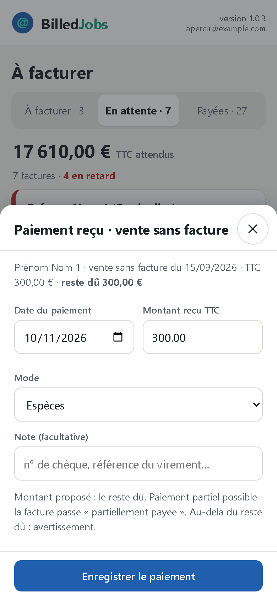
Un petit écart (frais bancaires) ? Cochez « Facture soldée, écart accepté » : l'écart reste visible. Un paiement saisi par erreur ? Annuler ce paiement : une ligne d'annulation est ajoutée, rien n'est effacé.
6. Les dépenses
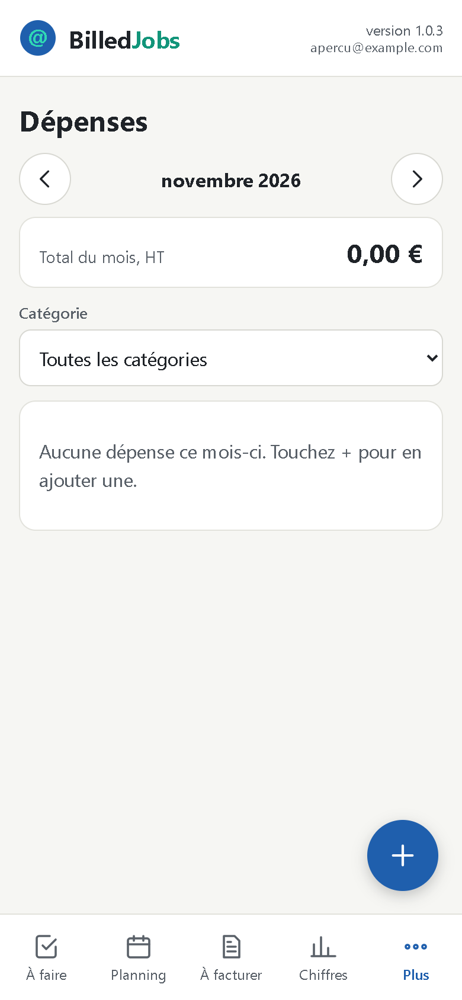
+ Dépense (dans À faire ou Plus › Dépenses) : date, fournisseur (ceux déjà saisis sont proposés), catégorie, montant TTC du ticket, taux de TVA, mode de paiement, note. Le HT et la TVA sont calculés.

Pourquoi tous les taux de TVA sont proposés pour une dépense, et pas pour une facture. Le taux d'un ticket est imposé par le fournisseur, pas par vous. Exemple : un ticket de restaurant à 10 % doit pouvoir s'enregistrer, même si vous ne facturez jamais à 10 %. Pour une facture, c'est votre taux : « Marquer facturée » ne propose que les taux que vous utilisez, pour éviter une erreur.
Une dépense se modifie ou s'annule : annulée, elle reste visible, barrée, et ne compte plus ; « Rétablir cette dépense » la fait compter de nouveau.
7. Vos chiffres
L'écran Chiffres a quatre onglets : Essentiel, Argent, Clients, Heures. En haut, « À traiter maintenant » et « Ce qu'il reste à rentrer » donnent la situation du jour. Pour le reste, choisissez la période : mois, trimestre, année, 12 mois glissants. Chaque bloc se replie, son chiffre clé restant visible.
- Déclaration URSSAF : le chiffre d'affaires encaissé de la période, un rappel avant la date limite, et Marquer déclarée une fois la déclaration faite.
- Seuil de franchise de TVA (si vous êtes en franchise) : l'application vous prévient quand vous en approchez.
- Ces chiffres aident votre comptable ; ils ne remplacent pas votre comptabilité.
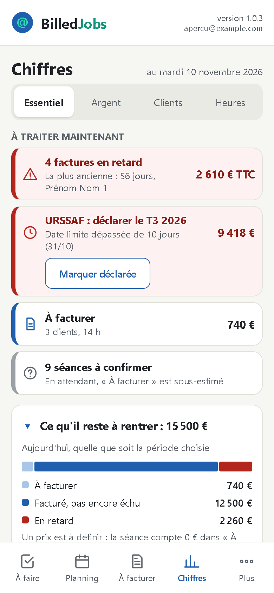
8. L'agenda Google
Une fois l'agenda activé (à l'installation), chaque séance prévue, d'aujourd'hui ou à venir, devient un rendez-vous de l'agenda Google « BilledJobs », sans prix. Toutes les 10 minutes, dans les deux sens :
| Dans l'application | Dans l'agenda |
|---|---|
| Vous modifiez la séance | Le rendez-vous suit |
| Vous annulez ou reportez la séance | Le rendez-vous disparaît |
| Dans l'agenda | Dans l'application |
|---|---|
| Vous déplacez ou raccourcissez le rendez-vous | La séance suit (si elle est encore prévue et pas facturée) |
| Vous supprimez un rendez-vous d'aujourd'hui ou à venir | La séance passe « annulée » ; elle n'est jamais effacée |
| Vous créez un rendez-vous à la main dans l'agenda « BilledJobs » | Aucune séance n'est créée ; À faire vous le signale |
Pour forcer la mise à jour sans attendre : Plus › Synchroniser l'agenda.
9. Les e-mails d'alerte
Chaque lundi vers 7 h, vous recevez un rapport : vos alertes ouvertes et les chiffres de la semaine, même si tout est à jour (« rien à traiter »). En réglage « chaque jour », vous recevez aussi, les autres jours, un e-mail des seules alertes nouvelles. Le bouton « Ouvrir @BilledJobs » de l'e-mail ouvre l'application.
Réglage : Plus › Paramétrages › E-mail, agenda et Drive (Oui / Non, chaque lundi / chaque jour, adresse de réception).
10. Les clients
Plus › Clients : la liste, avec recherche. Une fiche demande au minimum le nom, le type (professionnel ou particulier), l'adresse, le code postal (les communes sont proposées) et la ville ; un professionnel a aussi un SIREN ou un SIRET, dont la clé est contrôlée. Ne mettez jamais de données sensibles (santé, opinions…) dans les notes.
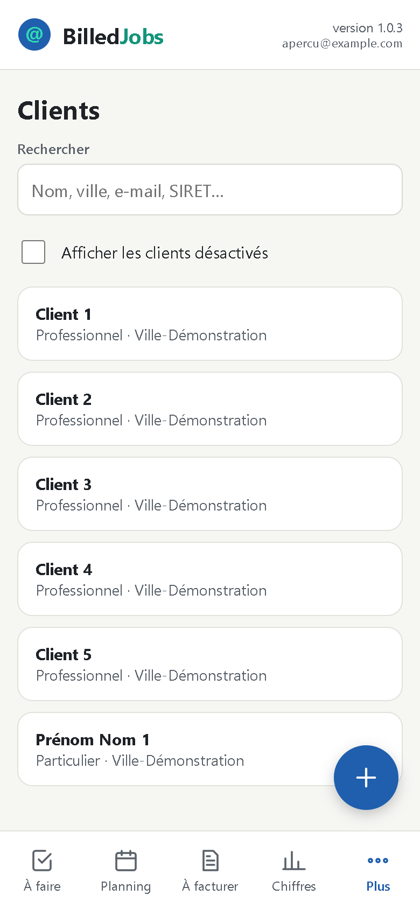
Un client ne se supprime pas : il se désactive. Un client qui vous le demande peut être anonymisé : son nom disparaît partout, factures comprises (« Client anonymisé n° 1 »). Ce geste est définitif.
11. Paramétrages
Plus › Paramétrages : votre entreprise (identité, SIRET), les seuils et alertes, la déclaration URSSAF, le régime de TVA, les listes (activités, types de séance, modalités, modes de paiement, catégories de dépenses, taux de TVA) et vos prestations (avec leur prix horaire). Tout se saisit ici, avec des contrôles : le classeur Google n'est pas fait pour être modifié à la main.

Une valeur de liste ne se supprime pas : elle se désactive, et elle reste sur ce qui l'utilise déjà.
Mode démonstration (Plus › Paramétrages › Mode démonstration : Oui) : l'application montre un exemple complet et inventé (clients, séances, factures, paiements, dépenses, chiffres), sans toucher à vos données. Un bandeau le rappelle en permanence ; rien n'est enregistré, et toute saisie est refusée. Seul votre compte passe en démonstration : vos e-mails et votre agenda ne changent pas. Pour revenir à vos données : le bouton du bandeau, ou Mode démonstration : Non.
12. Installer l'icône
L'icône met @BilledJobs sur votre écran d'accueil ou votre bureau. Elle ne s'installe pas toute seule : il faut l'ajouter une fois sur chaque appareil.
Avant de commencer
- Ouvrez un nouvel onglet dans votre navigateur.
- Tapez ou collez l'adresse
https://billedjobs.github.io/jon/, puis validez avec la touche OK ou Entrée du clavier. - Attendez que la page s'affiche, avec le dessin @BilledJobs au-dessus du bouton bleu.
Tant que vous voyez seulement une liste de suggestions sous la barre d'adresse, la page n'est pas ouverte, et l'icône ne pourra pas se créer.
Ajouter l'icône
| Appareil | Navigateur | Chemin |
|---|---|---|
| iPhone, iPad | Safari | Partager (le carré avec une flèche) › Sur l'écran d'accueil › Ajouter |
| iPhone, iPad | Chrome | Partager › Ajouter à l'écran d'accueil |
| Android | Chrome | Menu ⋮ › Ajouter à l'écran d'accueil (ou Installer l'application) › Installer |
| PC Windows | Chrome | Menu ⋮ › Caster, enregistrer et partager › Créer un raccourci vers cette page |
| PC Windows | Edge | Menu … › Applications › Installer ce site en tant qu'application |
| PC Windows | tous | Clic droit sur le bureau › Nouveau › Raccourci › coller l'adresse ; puis Propriétés › Document Web › Changer d'icône › le fichier icone-billedjobs.ico (essayé le 10/11/2026) |
| Mac (à confirmer) | Safari | Menu Fichier › Ajouter au Dock |
| Mac (à confirmer) | Chrome | Menu ⋮ › Caster, enregistrer et partager › Installer la page en tant qu'application |
Les noms des menus peuvent changer légèrement selon la version de votre navigateur.
Ouvrir l'application
Touchez l'icône : la page d'accueil s'ouvre. Touchez ensuite Ouvrir @BilledJobs. Votre compte Google est affiché dans l'application : vérifiez que c'est le bon. Google peut vous demander de vous connecter la première fois ; sur un appareil où votre compte est déjà connecté, l'application s'ouvre ensuite directement.
Ce qui est normal
- Un petit logo Chrome sur l'icône, sur Android ou sur PC : il indique que le raccourci s'ouvre dans Chrome.
- Une barre
script.google.comavec une croix, en haut de la fenêtre avec Edge : la croix ferme l'application et ramène à la page d'accueil.
13. Si quelque chose ne va pas
| Ce que vous voyez | Ce qu'il faut faire |
|---|---|
| L'icône est un « @ » sur fond gris | Retirez-la (appui long › Supprimer), ouvrez un nouvel onglet, attendez le dessin sur la page, puis recommencez |
| Rien ne se passe quand vous validez l'ajout de l'icône | Vérifiez que la page @BilledJobs est bien affichée, et pas la liste de suggestions du navigateur |
| Google affiche « Vous n'êtes pas autorisé à accéder au document demandé. » ou « Impossible d'ouvrir le fichier pour le moment. » (constaté à la répétition du 10/11/2026, deux comptes dans Edge) | Un autre compte est sans doute connecté dans ce navigateur. Ouvrez la page dans un onglet privé et connectez-vous seulement avec votre compte |
| L'application annonce « accès non autorisé » | Le compte affiché n'est pas le bon : connectez-vous avec votre compte @BilledJobs |
| Google vous envoie une « Alerte de sécurité » : « @BilledJobs — fichier MEP a désormais accès à votre compte Google » | C'est normal après l'installation : c'est votre propre application qui a reçu vos autorisations |
| L'application vous prévient qu'une séance a changé ailleurs | Elle a été modifiée sur un autre appareil ou depuis l'agenda : l'écran se recharge, refaites votre geste |
| Paramétrages affiche « Arrêtés » pour les e-mails ou l'agenda | Les traitements automatiques ne tournent plus : prévenez votre administrateur |
| Le rapport du lundi n'arrive pas | Regardez dans Spam et Promotions ; sinon, prévenez votre administrateur |
14. Glossaire
| Terme | Sens dans l'application |
|---|---|
| Séance | Un créneau de travail pour un client : date, heure, durée, prestation, modalité. Statut : prévue, faite, absence, reportée, annulée. |
| Prestation | Ce qui est vendu (ex. Excel, Matlab, Blender) ; porte l'activité et, au besoin, un prix horaire. Gérée dans Paramétrages. |
| Paramétrages | Écran de la roue crantée : mon entreprise, seuils et alertes, listes, prestations (DEC-76). |
| Journal | Trace de toutes les écritures (qui, quand, quoi), consultable dans Plus › Journal (DEC-75). |
| Type de séance | Formation, préparation, déplacement, administratif… ; dit si la séance est facturable. |
| Modalité | Où a lieu la séance : distanciel, chez le client, dans mes locaux, autre lieu. |
| Série | Ancien nom de la session : « Série 2/5 » s'affiche désormais « Session 2/5 » (DEC-66). |
| Session | Ensemble des séances d'une même prestation pour un même client sur plusieurs semaines ; intitulé automatique « Prestation · Client » ; heures = réalisé + restant (DEC-62). |
| Report / Déplacée | Report : la séance n'a pas lieu et est remplacée par une autre (« Reportée au », « Report du »). Déplacée : la même séance change de date (« Déplacée · prévue le »). |
| Conflit | Deux séances qui se chevauchent ; interdit à la saisie, signalé s'il existe déjà. |
| Client - Résumé | Ligne de À faire qui regroupe toutes les séances faites et pas encore facturées d'un client ; un appui ouvre la liste de ses séances. |
| À confirmer | Séance passée encore « prévue » : dire ce qui s'est passé (Faite, Absence, Reporter). |
| Nombre de stagiaires | Personnes formées pendant la séance (1 par défaut) ; sert au reporting, pas à la facture (DEC-58). |
| Heures facturables | Durée faite ; ou durée prévue pour une absence facturée ; sinon 0. |
| Reste dû | TTC de la facture moins le total déjà reçu (DEC-102). |
| En retard | Facture pas encore payée dont l'échéance est passée ; en rouge, listée dans À faire (RG-19). |
| Soldée, écart accepté | Facture déclarée payée alors que le total reçu n'atteint pas le TTC (petit écart, frais bancaires) ; l'écart reste affiché dans « Payées » (DEC-91, DEC-101). |
| Annuler ce paiement | Corrige un paiement saisi par erreur : une ligne d'annulation (montant opposé) est ajoutée, rien n'est effacé (DEC-101). |
| TVA du ticket | Taux imposé par le fournisseur sur une dépense ; tous les taux sont proposés, même ceux qu'on ne facture jamais (ex. restaurant à 10 %). « Marquer facturée » ne propose que les taux actifs (DEC-144). |
| Dépense annulée | Reste visible, barrée, et ne compte plus ; « Rétablir cette dépense » la fait compter de nouveau (DEC-140, DEC-145). |
| Coût réel d'une dépense | Ce qu'elle coûte vraiment : son HT en assujetti, car la TVA est récupérable ; son TTC en franchise, car elle ne l'est pas. Le régime est celui de la date de la dépense (DEC-151). |
15. Codes couleur
| Couleur | Où | Signification |
|---|---|---|
| Bleu (bordure ou fond bleu clair) | Planning, À faire | Aujourd'hui, semaine en cours ; bouton principal ; pastille « Faite » |
| Gris | Pastille | Séance prévue ; séance annulée (grisée, nom barré) |
| Orange | Pastille, encadré | Absence ; avertissement (fiche client incomplète, à vérifier) |
| Violet | Pastille | Séance reportée |
| Jaune (fond et bordure) | Carte de séance | Séance déplacée (« Déplacée · prévue le JJ/MM ») |
| Rouge (bordure et texte) | Carte, champ de saisie | Conflit de planning ; erreur de saisie à corriger |
| Rouge clair (fond) | À faire, bouton « Dépense » | Repère du geste, sans idée d'erreur (DEC-149) |
| Bleu clair (fond) | À faire, bouton « Client » | Repère du geste (DEC-149) |
| Vert d'eau (bande à gauche, étiquette) | À faire | « Client - Résumé » : ligne qui regroupe plusieurs séances, ouvrable |
| Bleu, violet, orange, vert, rose, brun | Planning › 4 semaines et Sessions | Une couleur par session (DEC-66) ; gris = séance hors session |
| Gris figé (fond gris) | Tableau d'une session | Séance faite, absente ou facturée : non modifiable |
| Jaune / rouge | Tableau d'une session | Ligne modifiée non enregistrée / ligne en erreur (enregistrement bloqué) |
| Rouge (bordure et texte) | À facturer › En attente, À faire | Facture en retard : échéance dépassée, pas payée (DEC-102) |
| Gris barré | Liste des paiements d'une facture | Paiement annulé (« annulé le JJ/MM/AAAA »), gardé dans l'historique (DEC-102) |
| Gris barré | Liste des dépenses | Dépense annulée, hors du total (DEC-140) |
| Rouge, orange, bleu, gris, vert (bande à gauche) | Chiffres › À traiter maintenant | Retard ou date URSSAF dépassée ; rappel ou seuil proche ; à facturer ; séances à confirmer ; rien d'urgent (DEC-133) |
| Bleu foncé / bleu clair | Graphes de Chiffres | Encaissé de la période choisie, heures faites, part encaissée / autres mois, heures prévues, part non encaissée (DEC-139) |
| Bleu, vert, violet, rose | Chiffres › Facturé par activité | Une couleur par activité, toujours avec son nom et sa valeur (DEC-139) |